GenAI Architecture Patterns — From Chat to Enterprise
The Pattern Library
When you first sit down to build something with a large language model, the sheer number of possible architectures can feel overwhelming. Should you just call an API? Do you need a vector database? What about agents? The truth is, nearly every GenAI system in production today is a variation on one of ten core patterns — and those patterns build on each other in a natural progression. Think of this chapter as your field guide. We will walk through each pattern from the simplest to the most sophisticated, explaining not just what they look like but when you would reach for one over another. By the end, you will have a mental toolkit that lets you look at any business problem and immediately sketch the right architecture on a whiteboard.
Pattern 1: Simple Chat API
Every journey starts somewhere, and in the world of GenAI architecture, this is your starting line. The Simple Chat API is the “Hello World” of generative AI — a direct, stateless call from your application to a language model and back again.

The components here are intentionally minimal: an API endpoint that accepts user input, a system prompt that defines how the model should behave, and a connection to an LLM provider like OpenAI, Anthropic, or Google. That is it. There is no database, no retrieval layer, no memory of previous conversations. Each request stands entirely on its own.
This pattern is ideal for internal tools, rapid prototypes, and single-purpose AI features where conversational continuity is not important. Think of a Slack bot that rewrites emails in a more professional tone, or an internal tool that generates SQL queries from natural language descriptions. These are situations where the user sends a request, gets a response, and moves on.
There are a few architectural details worth paying attention to even at this simple level. The system prompt is doing all the heavy lifting in terms of shaping the model’s behavior, so invest time getting it right. Temperature is your dial between creativity and consistency — lower values produce more predictable output, which is usually what you want in enterprise settings. And even though it feels like a trivial pattern, adding response caching for repeated or near-identical queries can save you a surprising amount of money at scale. Do not underestimate how often users ask the same questions.
Pattern 2: Conversational Chatbot
The moment your users expect the AI to remember what they said thirty seconds ago, you have outgrown Pattern 1. The Conversational Chatbot pattern adds memory so the system can track context across multiple turns of dialogue, which is what most people picture when they think of an AI assistant.

The architecture introduces a session store — some persistent layer where you keep the conversation history. On each new request, your application retrieves the prior messages, assembles them into a prompt alongside the new user input, sends everything to the model, and then stores the response back into the session for next time.
This sounds straightforward, and conceptually it is, but the design decisions hiding inside this pattern are the ones that separate a polished product from a frustrating one. First, you need a memory strategy. The simplest approach is a window buffer — keep the last N messages and discard anything older. This works well for short interactions but falls apart in long-running sessions where important context was mentioned early on. A more sophisticated approach is summary memory, where you periodically ask the model to summarize the conversation so far and replace the older messages with that summary. This preserves the gist without consuming your entire context window.
Second, you need to think about where those sessions live. Redis is a natural choice for short-lived, disposable conversations — customer support chats, for instance, where the session ends when the user closes the browser tab. But if your users expect to come back days later and pick up where they left off, you need durable storage in a proper database. Finally, and this one catches teams off guard, long conversations will eventually exceed the model’s context window. You need a truncation strategy from day one, not as an afterthought when production users start hitting mysterious errors.
Pattern 3: RAG (Retrieval-Augmented Generation)
Chapter 3 introduced RAG as one of your new architectural building blocks. Here, we turn it into a full design pattern. If there is one pattern that defines enterprise GenAI adoption, it is RAG. Retrieval-Augmented Generation is the technique that allows a language model to answer questions about your data — your internal documents, your knowledge base, your proprietary information — without having to retrain the model itself. It is arguably the most important pattern in this entire chapter, and it is the one you will see deployed most frequently in real-world corporate settings.

The idea is elegant in its simplicity. When a user asks a question, you first convert that question into a vector embedding — a numerical representation that captures the semantic meaning of the query. You then search a vector database where you have previously stored embeddings of your own documents, finding the chunks that are most semantically similar to the question. Those retrieved chunks get injected into the prompt alongside the user’s question, and the language model generates an answer that is grounded in your actual data rather than its general training knowledge.
The components required are an embedding model to convert text into vectors, a vector database to store and search those document embeddings, a chunking pipeline that breaks your documents into pieces small enough to embed and retrieve meaningfully, a prompt template that combines the user’s query with the retrieved context, and of course the LLM itself to generate the final answer.
Where teams spend most of their time, though, is on the critical design decisions that determine whether the system returns genuinely helpful answers or frustrating near-misses. Chunk size matters enormously — too small and you lose context, too large and you dilute relevance. Most production systems settle somewhere in the range of 500 to 1000 tokens per chunk, but the right number depends on your content. The number of chunks you retrieve also requires tuning; pulling back 3 to 10 chunks is typical, but more is not always better because irrelevant chunks can actually confuse the model. Adding a reranking step — where a cross-encoder model re-scores the retrieved chunks for relevance before they go into the prompt — can dramatically improve answer quality. And metadata filtering, which lets you narrow the search by user permissions, document type, date range, or other attributes, is essential for any system where not all users should see all documents.
Pattern 4: Document Processing Pipeline
While the previous patterns focus on interactive question-and-answer experiences, the Document Processing Pipeline is about using AI to process documents at scale in a more batch-oriented fashion. This is the pattern behind invoice automation, contract review, compliance screening, and medical records processing — anywhere you have large volumes of documents that need to be read, understood, and converted into structured data.
The flow is conceptually simple: documents come in through an ingestion layer that handles the messy reality of different file formats — PDFs, scanned images, emails, Word documents. Text gets extracted, sometimes requiring OCR for scanned content. Then the AI processing layer takes over, performing tasks like classification (what type of document is this?), summarization, or structured extraction (pull out the invoice number, date, line items, and total). The output is clean, structured data — typically JSON conforming to a predefined schema — that flows into your databases and downstream systems.
The architectural character of this pattern is quite different from a chatbot. It is batch-oriented, meaning documents typically flow through processing queues rather than being handled one-at-a-time in real-time. Structured output is critical — you want the LLM to return data in a precise format that your downstream systems can consume, which means using techniques like JSON mode or function calling to force the model into returning well-formed structured responses. A validation layer that checks extracted data against business rules catches errors before they propagate — for example, verifying that an extracted invoice total actually equals the sum of the line items. And robust error handling is non-negotiable. Documents that fail processing should be routed into a queue for human review rather than silently dropped, because in most enterprise contexts, missing a document is worse than processing it slowly.
Pattern 5: Multi-Model Router
Here is a pattern that pays for itself almost immediately. The Multi-Model Router recognizes a simple economic truth: not every question requires your most powerful (and most expensive) model. A user asking “What time does the office close?” does not need the same computational firepower as a user asking “Analyze the competitive implications of our Q3 earnings relative to industry trends.” By routing requests to different model tiers based on complexity, you can dramatically reduce costs without meaningfully sacrificing quality.

The implementation starts with a request classifier — something that looks at each incoming request and decides how complex it is. This classifier can be as simple as a set of keyword rules (questions containing “summarize this 50-page document” probably need a stronger model), a small trained classifier, or even a lightweight LLM call that categorizes the request before routing it. Once classified, the request goes to the appropriate model tier: fast and cheap for simple tasks, mid-range for moderate complexity, and the flagship model only for requests that truly demand it.
A smart addition is a fallback mechanism: if the fast model’s response fails a quality check (maybe it returns an obviously incomplete answer or triggers a confidence threshold), the system automatically escalates to a stronger model. This gives you a safety net that preserves quality while still capturing the cost savings on the majority of requests. And those savings are substantial — teams typically report 60 to 80 percent cost reductions after implementing this pattern, because the reality is that most requests in most applications are simple enough for a smaller model to handle well. This is one of the first patterns you should implement once your GenAI application starts scaling, because the economics become compelling very quickly.
Pattern 6: Agentic Tool Use
Up to this point, every pattern has been about generating text — answering questions, summarizing documents, having conversations. Agentic Tool Use is where things get genuinely interesting, because it gives the LLM the ability to take actions in the real world. Instead of just producing words, the model can search databases, call APIs, execute queries, and interact with external systems.

The architecture follows what is sometimes called the “think-act-observe” loop. The agent receives a user request, reasons about what needs to be done, selects a tool to call, executes that tool, observes the result, and then decides whether it has enough information to respond or needs to take another action. This loop can repeat multiple times for complex requests, with the agent chaining together several tool calls to accomplish a multi-step task.
The key architectural decisions here are fundamentally about control and safety. Tool definitions need to be crisp and unambiguous — clear descriptions of what each tool does, along with typed parameters, so the model knows exactly what is available and how to use it. Sandboxing is essential because you are giving an AI system the ability to interact with real systems. Restrict tool permissions carefully: read-only database access rather than write access, approved API endpoints rather than open-ended HTTP calls. A step budget — a maximum number of tool calls per request — prevents the agent from getting stuck in infinite loops where it keeps calling tools without making progress. And a wall-clock timeout ensures that even a well-behaved agent does not tie up resources indefinitely on a single request. These guardrails might feel overly cautious when you are building your prototype, but they are the difference between a system you can trust in production and one that keeps you up at night. Chapter 11 is devoted entirely to agent architecture — tool registries, memory systems, permission models, and production deployment — so if agentic patterns are central to your use case, that chapter is your next stop.
Pattern 7: Evaluation and Guardrails
This pattern is not optional. Every GenAI system that touches real users or real data needs a safety layer, and the Evaluation and Guardrails pattern provides exactly that. Think of it as the security checkpoint that wraps around whichever other pattern you have deployed — inspecting what goes in and scrutinizing what comes out.

On the input side, guardrails screen for prompt injection attempts (where a user tries to manipulate the model into ignoring its instructions), off-topic requests that fall outside the system’s intended scope, personally identifiable information that should not be sent to an external model, and rate limit violations that might indicate abuse. On the output side, guardrails check the model’s response for leaked PII, harmful or inappropriate content, detected hallucinations, and violations of expected output format.
There are three main implementation approaches, and most production systems use a combination. Rule-based guardrails — regex patterns, keyword lists, format validators — are fast, cheap, and deterministic. They are your first line of defense and they handle the obvious cases well. Classifier-based guardrails use a small, purpose-trained model to detect things like toxicity or PII, offering more accuracy than rules alone at a modest computational cost. And LLM-based guardrails, where you use a model to evaluate another model’s output, provide the most flexibility. You can ask a judge model questions like “Does this response contain information that contradicts the provided source documents?” to catch subtle hallucinations. This last approach is the most expensive, but for high-stakes applications — healthcare, financial advice, legal analysis — the cost is justified by the risk it mitigates. The important thing is to treat guardrails as a first-class architectural component, not something you bolt on after launch.
Pattern 8: Fine-Tuned Model Serving
Sometimes, no matter how cleverly you craft your prompts, the base model just does not produce output that meets your requirements. Maybe you need a very specific brand voice that the model cannot nail from instructions alone, or your domain uses specialized terminology that the model consistently gets wrong. This is where fine-tuning comes in — training a model on your own data so that its default behavior aligns more closely with what you need.

The architecture involves a training pipeline that takes your curated examples, fine-tunes a base model, evaluates the result against an automated test suite, and, if it passes, registers the new model version for serving. The evaluation suite is critical — without it, you have no way of knowing whether a new fine-tuning run actually improved things or introduced regressions.
Knowing when to fine-tune and when not to is one of the more important judgment calls in this field. Fine-tuning makes sense when you have consistent style or format requirements that prompting cannot reliably achieve, when your domain uses terminology that the base model gets wrong even with examples in the prompt, when you need to optimize costs by replacing a large model with a smaller fine-tuned one that performs just as well on your specific task, or when latency is critical and a smaller, faster model would make a meaningful difference to the user experience.
But fine-tuning is not a silver bullet, and reaching for it too early is a common mistake. If RAG would solve your problem — because the issue is that the model lacks specific knowledge rather than specific behavior — then RAG is almost always cheaper, easier to update, and faster to deploy. If the base model handles your task well with good prompting, fine-tuning adds complexity without adding value. And if your training data set is very small, say fewer than a hundred examples, you are unlikely to see meaningful improvement from fine-tuning and may even make things worse. Exhaust the simpler approaches first.
Pattern 9: Multi-Agent Orchestration
When a task is complex enough that a single agent with a pile of tools starts to feel unwieldy, the Multi-Agent Orchestration pattern offers a more elegant solution. Instead of one agent trying to do everything, you break the work into specialized roles — a research agent, an analysis agent, a writing agent — each with its own focused set of tools and system prompt, coordinated by an orchestrator that manages the overall workflow.

There are several orchestration patterns you can employ depending on the nature of the work. Sequential orchestration, sometimes called a pipeline, passes the output of one agent directly to the next — research feeds analysis, which feeds writing. This is clean and predictable, making it easy to debug when something goes wrong. Parallel orchestration dispatches multiple agents simultaneously and merges their results, which is useful when the subtasks are independent and speed matters. Hierarchical orchestration introduces a manager agent that delegates tasks to subordinates and reviews their work before assembling the final output, mimicking how a human team lead might operate. And the debate pattern, which is particularly interesting for analytical tasks, has two agents argue different perspectives on a question while a third agent synthesizes their arguments into a balanced conclusion.
The key thing to remember about multi-agent systems is that they add significant complexity — more moving parts, more failure modes, more latency, more cost. They are worth it for genuinely complex tasks that benefit from specialization, such as comprehensive research reports, multi-step data analysis workflows, or content creation pipelines. They are absolutely not worth it for simple question-and-answer interactions where a single model call or a basic RAG setup would do the job just as well. Reach for this pattern when you have exhausted the simpler ones, not before. For a detailed treatment of multi-agent orchestration patterns — including sequential pipelines, parallel fan-out, supervisor hierarchies, and human-in-the-loop designs — see Chapter 11.
Pattern 10: Production GenAI Platform
The final pattern is not so much a single architecture as it is the convergence of all the previous patterns into an enterprise-grade platform. This is what a mature organization’s GenAI infrastructure looks like when they have moved past the pilot phase and are running generative AI at scale across multiple use cases and teams.
At the top sits an AI Gateway that handles all the cross-cutting concerns — authentication, rate limiting, request routing, logging, and cost management. Below that, you have the individual capability layers: the Chat API for conversational interfaces, the RAG Engine for knowledge retrieval, the Agents Runtime for tool-using agents, the Batch Pipeline for document processing, and Custom Models for any fine-tuned models serving specific use cases. Underneath all of that, a shared services layer provides guardrails, evaluation, monitoring, and a prompt registry that teams can draw from. And at the foundation, a data platform houses your vector stores, feature stores, training data, and centralized logging.
This is the target state, and it is important to understand it as exactly that — a destination, not a starting point. No organization should attempt to build this all at once. You grow into it organically as teams adopt different patterns and the need for shared infrastructure becomes apparent. The first team builds a RAG application and stands up a vector database. The second team builds a chatbot and needs the same guardrails. By the third or fourth team, someone recognizes that a shared AI Gateway would save everyone time and money. That is when the platform starts to take shape naturally. Trying to build the platform before you have the use cases is a classic enterprise anti-pattern that leads to expensive infrastructure nobody uses.
Choosing the Right Pattern
With ten patterns in your toolkit, the natural question is: which one do I actually need? The answer depends on what you are trying to accomplish. The table below maps common needs to the patterns that address them, and in many real-world systems you will combine several patterns together.
| Need | Pattern |
|---|---|
| Quick prototype | 1 (Simple Chat) |
| Customer support | 2 (Chatbot) + 3 (RAG) + 7 (Guardrails) |
| Internal knowledge | 3 (RAG) |
| Document automation | 4 (Document Pipeline) |
| Cost optimization | 5 (Multi-Model Router) |
| Task automation | 6 (Agentic) |
| Complex workflows | 9 (Multi-Agent) |
| Enterprise scale | 10 (Platform) |
Notice how customer support, which is one of the most common GenAI use cases, actually combines three patterns — a chatbot for conversational interaction, RAG for grounding answers in your knowledge base, and guardrails for production safety. This is the norm rather than the exception. Real systems are almost always compositions of multiple patterns, and understanding each one individually is what lets you assemble them confidently.
Key Takeaways
- These ten patterns cover the full spectrum of GenAI architectures, from a simple API call all the way to an enterprise-wide platform, and nearly every production system you encounter will be a variation or combination of them.
- Start with Patterns 1 through 3 — Simple Chat, Conversational Chatbot, and RAG — and only add complexity when a genuine requirement demands it, because premature architecture is just as costly as premature optimization.
- The Multi-Model Router (Pattern 5) typically saves 60 to 80 percent on inference costs by routing simple requests to cheaper models, making it one of the highest-ROI patterns to implement early in your journey.
- Every production system needs guardrails (Pattern 7), full stop — this is not optional, and treating it as an afterthought is one of the most common and most damaging mistakes teams make.
- The Production GenAI Platform (Pattern 10) is the long-term target state for mature organizations, not a starting point — build it incrementally as use cases justify the investment.
Companion Notebook
 — Build a
request classifier that routes questions to different model tiers based
on complexity. Measure cost savings compared to using the best model for
everything.
— Build a
request classifier that routes questions to different model tiers based
on complexity. Measure cost savings compared to using the best model for
everything.